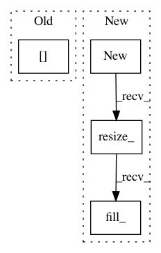

531bc80bae88a5f240583bc19de9fc4f65e675a5,gpytorch/math/functions/interpolated_toeplitz_gp_marginal_log_likelihood.py,InterpolatedToeplitzGPMarginalLogLikelihood,backward,#InterpolatedToeplitzGPMarginalLogLikelihood#Any#,49
Before Change
zeros = torch.zeros(n)
for i in range(n):
e_i = zeros.copy()
e_i[i] = 1
mat_inv_ei = LinearCG().solve(mv_closure, e_i)
trace += mat_inv_ei[i]
After Change
if self.needs_input_grad[2]:
n = len(y)
quad_form_part = mat_inv_y.dot(mat_inv_y)
noise_grad = c.new().resize_(1).fill_(quad_form_part - self.tr_inv).mul_(0.5 * grad_output_value)
return mat_grad, y_grad, noise_grad
In pattern: SUPERPATTERN
Frequency: 3
Non-data size: 4
Instances
Project Name: cornellius-gp/gpytorch
Commit Name: 531bc80bae88a5f240583bc19de9fc4f65e675a5
Time: 2017-08-01
Author: jrg365@cornell.edu
File Name: gpytorch/math/functions/interpolated_toeplitz_gp_marginal_log_likelihood.py
Class Name: InterpolatedToeplitzGPMarginalLogLikelihood
Method Name: backward
Project Name: cornellius-gp/gpytorch
Commit Name: 5491a85b8a65407feb97055ebd5ee39169de7e6b
Time: 2017-09-21
Author: jrg365@cornell.edu
File Name: gpytorch/utils/toeplitz.py
Class Name:
Method Name: sym_toeplitz_derivative_quadratic_form
Project Name: allenai/allennlp
Commit Name: a2878a883280dc0525b57ae800d7b3c719f6046c
Time: 2017-10-21
Author: mattg@allenai.org
File Name: allennlp/models/encoder_decoders/simple_seq2seq.py
Class Name: SimpleSeq2Seq
Method Name: forward